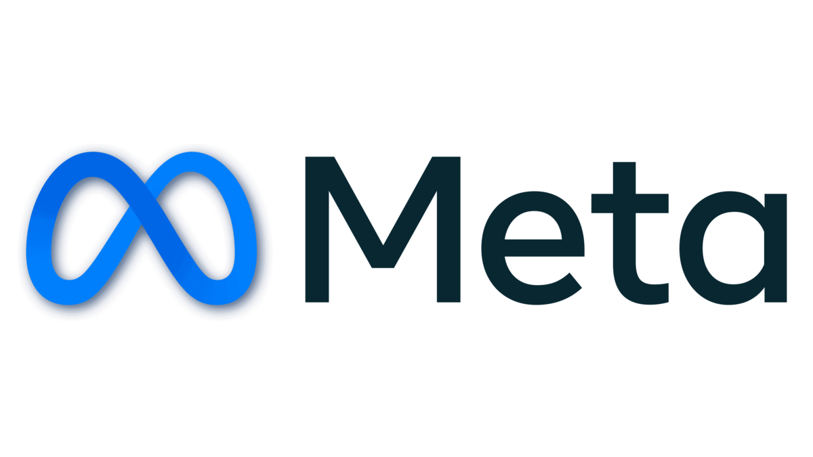

Hi Lemon,
I’m Mark Zuckerberg, and I’m reaching out personally because we’re building something ambitious at Meta — and I believe you might be a perfect fit.
Our LLaMA models are setting a new standard for open, state-of-the-art AI. From LLaMA 2 to our latest LLaMA 3 release, we've shown the world that openness and performance don’t have to be in conflict. But we're just getting started.
We're assembling one of the most elite AI teams in the world — researchers, engineers, and builders who care deeply about pushing the boundaries of what's possible and making it available to the world. If you're excited about large-scale model training, open-source innovation, and the chance to work on real-world deployment across billions of users in WhatsApp, Instagram, and smart devices — this is the place.
I'd like to invite you to join Meta AI. This isn’t just a job. It’s an opportunity to define the next decade of computing.
Let’s build it together.
— Mark
Mark Zuckerberg
Founder & CEO, Meta
[meta.com/careers/llama]
